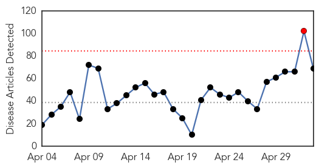
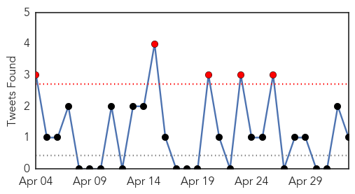
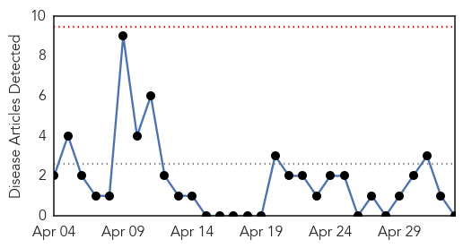
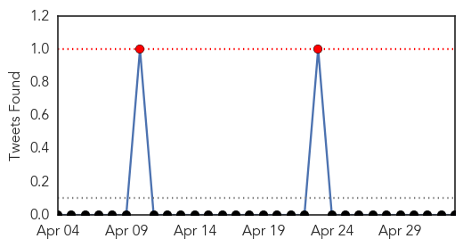

Unknown
30-Day Web Trend
1 alerts, 0 warnings

30-Day Twitter Trend
4 alerts, 0 warnings

Article Locations

Article Confidences
Top Articles:
- 1.000
- First MERS Case Diagnosed In U.S., Patient In Indiana Hospital
- 1.000
- MERS virus may have been brought into UK on Heathrow flight
- 1.000
- MERS virus may have been brought into UK on Heathrow flight
- 1.000
- +25 MERS cases in 2 days — RT News
- 0.999
- Middle East Respiratory Syndrom (MERS) Reaches United States
- 0.999
- The Deadly Respiratory Illness Originating From The Middle East Arrives Via Jetliner In The U.S.
- 0.998
- the edge of knowledge
- 0.997
- First case of Mers virus confirmed in US, in traveller from Saudi Arabia
- 0.997
- US officials confirm first case of MERS
- 0.997
- Saudi Arabia finds 26 more cases of MERS, Egypt reports first sufferer
- 0.997
- First case of deadly MERS virus reported in the U.S.
- 0.996
- First Case of MERS Confirmed in the US, CDC Reports
- 0.996
- Officials: MERS victim recovering, condition improves
- 0.995
- First case of MERS virus in America confirmed
- 0.995
- CDC alerts travelers to MERS virus case
- 0.995
- MERS kills two more people in Saudi Arabia
- 0.994
- Saudi Arabia MERS cases double in April
- 0.993
- First US case of deadly MERS virus confirmed: CDC
- 0.992
- U.S. detects first case of MERS
- 0.987
- 5 Things to Know About the MERS Virus Now That It's Here
- 0.980
- US Witnesses First Case of MERS in a Man Who Traveled to Indiana from Riyadh
- 0.978
- Health Ministry advises Palestinians against Hajj trip
- 0.977
- MERS Virus In USA for First Time; CDC Investigating Case of Man Who Traveled From Riyadh to Indiana
- 0.977
- Indiana hospital caring for U.S. MERS patient still bustling
- 0.974
- MERS virus: Indiana hospital treating U.S. patient still bustling
- 0.965
- Were U.S. troops exposed to MERS virus? -Commentary
- 0.955
- First MERS Virus Case Identified in U.S.
- 0.952
- First MERS Case Reported in United States
- 0.948
- Illinois health officials aware of MERS virus case
- 0.936
- MERS, a rare respiratory disease, discovered in Indiana
- 0.923
- Should the remaining stocks of smallpox be destroyed?
- 0.917
- Chicago Tribune
- 0.917
- Chicago Tribune
- 0.917
- Chicago Tribune
- 0.917
- Chicago Tribune
- 0.910
- The world windows to Thailand
- 0.898
- The World On Arirang
- 0.895
- Deadly Virus Sparks French Ban On Live Pigs From U.S. : The Two-Way : NPR
- 0.881
- Deadly Virus Sparks French Ban On Live Pigs From U.S.
- 0.881
- Deadly Virus Sparks French Ban On Live Pigs From U.S.
- 0.875
- Virus Has Reportedly Wiped Out One-Tenth Of The US Pig Population
- 0.866
- A pro-Russia protester waves a Donbass flag as they storm the governor's business premises in Donetsk
- 0.866
- An endangered silverback mountain gorilla from the Nyakamwe-Bihango family is seen within the forest in Virunga national park near Goma
- 0.866
- Pro-Russia protesters storm the governor's business premises in Donetsk, eastern Ukraine
- 0.866
- Russia's Lavrov and OSCE's Burkhalter agree on need to fulfill Geneva agreement on Ukraine
- 0.866
- U.S. jury orders Apple to pay Samsung $158,400 in mobile patents trial
- 0.866
- U.S. jury orders Samsung to pay Apple $119.6 mln
- 0.847
- France suspends pig imports from North America, Japan. Markets. Tengrinews.kz
- 0.843
- CDC: Tough Mudder participants sickened by feces-tainted mud
- 0.843
- Virus epidemic : France to ban US, Canadian, Mexican, Japanese pigs
Showing top 50 articles...
Top Tweets:
- 0.678
- More disease, more virus, more coughing/sneezing, more spreading of droplets. Right?
- 0.534
- “@makoto_au_japon: Video: First case of Middle East Respiratory Syndrome confirmed in U.S. http://t.co/iYZD7Vug6d MERS US Saudi
Cholera
30-Day Web Trend
0 alerts, 0 warnings

30-Day Twitter Trend
1 alerts, 0 warnings

Article Locations

Article Confidences

Top Articles:
-
No articles found for May 03, 2014
Top Tweets:
-
No tweets found for May 03, 2014